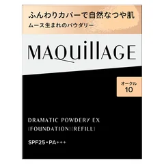
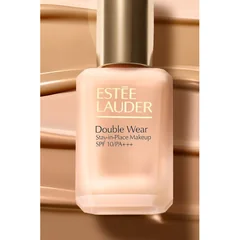
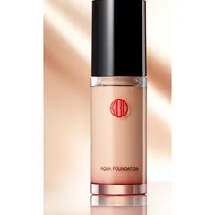
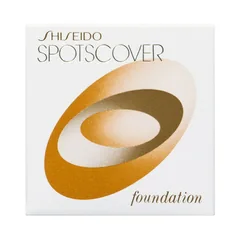
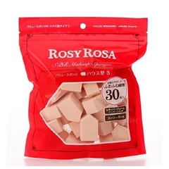

しっとりパウダー

マキアージュ
ドラマティックパウダリー EX（レフィル）
9.3g・全8色・ケース別
¥2450税込・出典掲載価格
書き込みの声
- 選ぶ条件：昼に小鼻がテカりやすく、それでも粉っぽく見せたくないパウダー派
- 42歳で、ほかのパウダーよりしっとりして粉っぽくなりにくい、セミマット寄りという声
気になる声乾燥肌だとまだらに落ちた、いちばん暗い色でも白浮きしたという声も。色はあごの横で首と比べて
販売価格・容量・送料はリンク先でご確認ください
THE COSME EDIT / 2026.09.20
動画と同じ写真・名前・順番で並べています。候補の違いと価格を見返せます。全部そろえる必要はなく、先に崩れる場所（小鼻の脂か、頬の乾きか）と、全体を隠したいのか気になるところだけかで、1つか2つを選ぶ前提です。ガルちゃんのファンデ・厚塗り・乾燥肌のトピ32個（書き込み6,008件）から、使った人の声をまとめたもので、結果を保証するものではありません。赤みやかゆみが続く、粉をふいてひりひりするときは皮膚科へ。
05 ITEMS 動画で紹介した商品
動画では商品の前に、買わなくてもできること（保湿がなじむまで待つ・ほうれい線と目の下には置かない・昼は上から足さずティッシュで押さえる）も話しています。
価格は出典掲載時のものです。楽天の現在価格とは異なる場合があります。

マキアージュ
9.3g・全8色・ケース別
¥2450税込・出典掲載価格
書き込みの声
気になる声乾燥肌だとまだらに落ちた、いちばん暗い色でも白浮きしたという声も。色はあごの横で首と比べて
販売価格・容量・送料はリンク先でご確認ください

エスティ ローダー
30mL・全13色・SPF10/PA++
¥7590税込・出典掲載価格
書き込みの声
気になる声マットで張りつく感じ・つけ心地が重いので秋冬は使わないという声も。少量を濡らしたスポンジで薄く
販売価格・容量・送料はリンク先でご確認ください

江原道
30mL・全7色・SPF25/PA++
¥5500税込・出典掲載価格
書き込みの声
気になる声持ちがよくない、仕上がりの割に高いと感じた人も。脂っぽさが強い人より乾きやすい人向け
販売価格・容量・送料はリンク先でご確認ください

資生堂
20g
¥1028税込・出典掲載価格
書き込みの声
気になる声隠す物は時間がたつとパサついて小じわが目立つことがある。目の下などよく動くところはごく薄く
販売価格・容量・送料はリンク先でご確認ください

ロージーローザ
30個入
¥616税込・出典掲載価格
書き込みの声
気になる声ブラシは仕上がりがいいという声がある一方で、洗うのが面倒でやめた人も多い
販売価格・容量・送料はリンク先でご確認ください
SOURCE & NOTES
集計期間：2026年9月19日に確認（書き込みは2017年〜2026年）
価格は2026年9月19日に楽天の商品ページで確認した税込価格です（エスティ ローダーと江原道は公式ショップ）。Amazonの価格は異なることがあります。Amazonのリンクは、マキアージュ＝オークル10、ダブル ウェア＝サンド、江原道＝013の色のページで、色はリンク先で選び直せます。見出しは選ぶ条件で、順位ではありません。マキアージュはレフィルのみの価格で、ケースは別です。